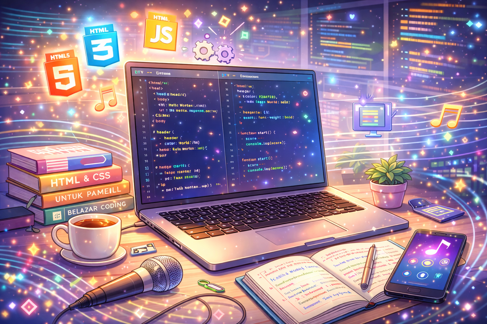
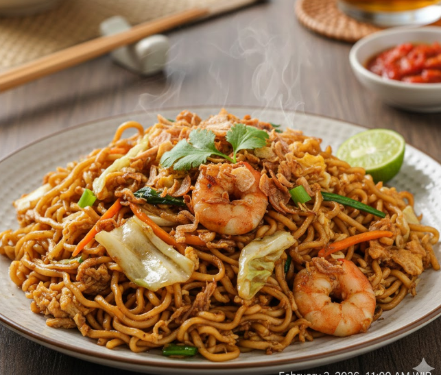
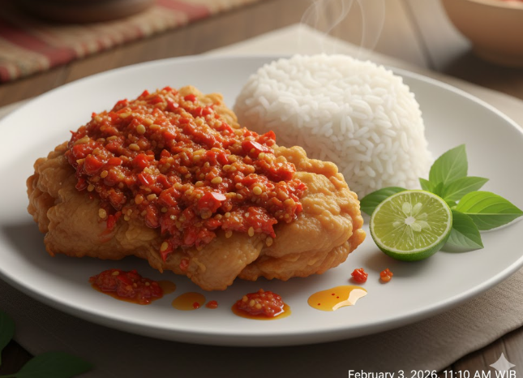
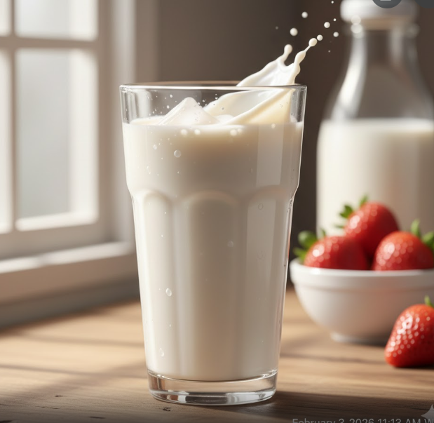

Dinda Fitrian Agustin
Pelajar | Web Developer 💻
Tentang Saya
"Saya adalah siswi kelas 10 di SMK Riyadhul Ulum yang sangat tertarik dengan dunia teknologi, khususnya pengembangan web. Sejak kecil, saya sudah tertarik dengan hal-hal yang berhubungan dengan komputer dan internet. Saya selalu ingin tahu lebih banyak tentang cara membuat situs web dan aplikasi yang bisa mempermudah kehidupan sehari-hari. ✨💖
Hobi Saya
- Ngoding
 - Bermain game
klik ini & cobalah bbrapa game yg saia mainkn! - Mendengarkan musik
Mknan & mnumn Favorit Saya
- Mie goreng
 - Ayam geprek
 - Susu
